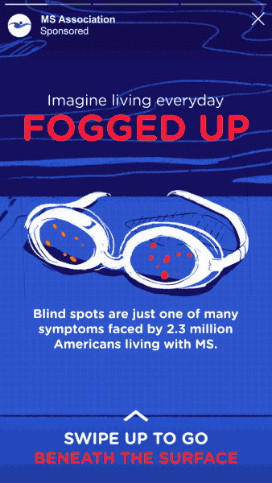
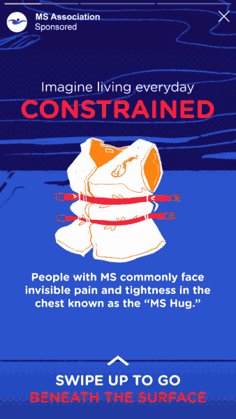
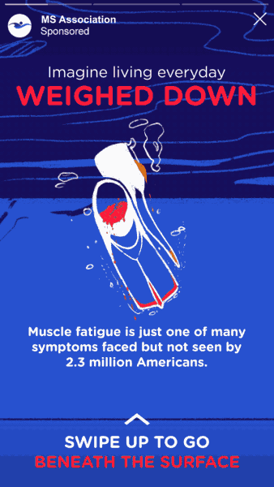

#ADVERTISING - 2019
Building an Empathy-Based Awareness Campaign for MSAA's Swim Fundraiser
“
Because I don't always look sick, people don't always understand what I'm going through.
Sonia, MS Australia
”Multiple Sclerosis is an invisible disease. Rare, and different in every person: Beneath the Surface is a campaign I concepted and directed for the Multiple Sclerosis Association of America, priming young online users to understand MS symptoms through their annual "Swim for MS" fundraising drive.
In this campaign, I developed motion, social, and print collateral.
In this campaign, I developed motion, social, and print collateral.



What's beneath the surface?
My research found that MS, while being a physically debilitating disease, can be equally devastating as an ailment that draws little understanding or empathy. Then, my goal was to create a link between this insight and MSAA's Swim for MS fundraiser.
My research found that MS, while being a physically debilitating disease, can be equally devastating as an ailment that draws little understanding or empathy. Then, my goal was to create a link between this insight and MSAA's Swim for MS fundraiser.

The overall goals of the campaign were to 1.) raise funds for MSAA 2.) develop awareness and understanding of the disease and 3.) build MSAA's social profile. By building an understanding of the disease in our audience, we achieved all 3.
User engagement and fundraising
An "end goal" of the campaign was to organize young online users to raise funds in a socially visible way. In addition to online social posts, I created a printable flowchart that MSAA would send to fundraising candidates that would allow them to plan their own activities, engaging a more broad and diverse audience.
An "end goal" of the campaign was to organize young online users to raise funds in a socially visible way. In addition to online social posts, I created a printable flowchart that MSAA would send to fundraising candidates that would allow them to plan their own activities, engaging a more broad and diverse audience.